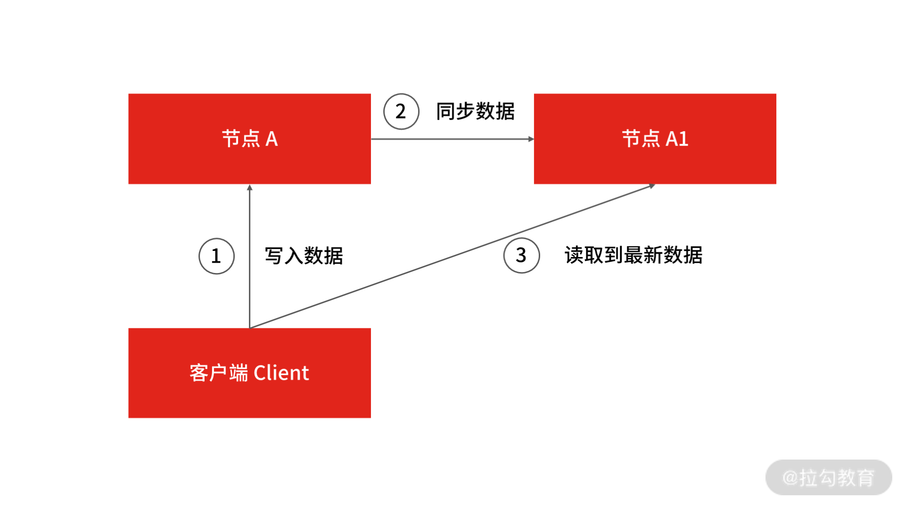
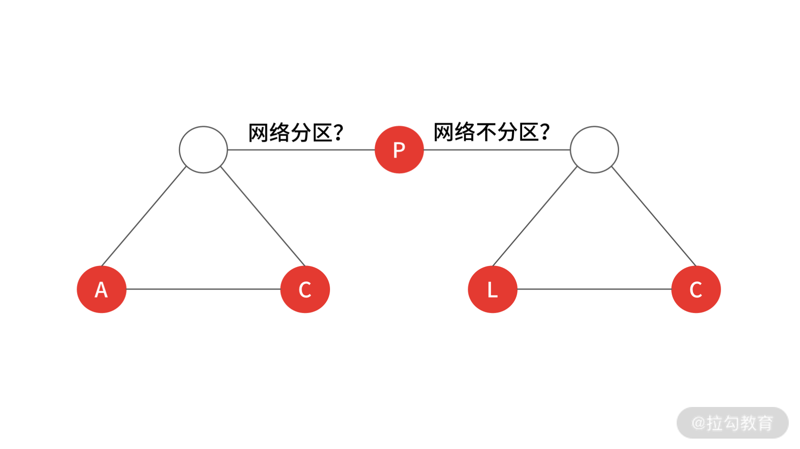
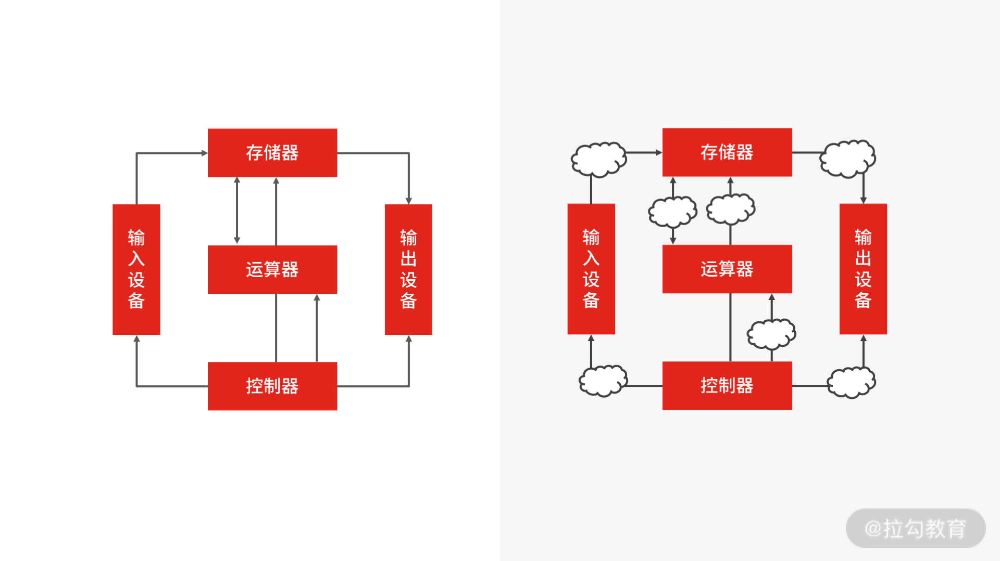

- 00 开篇词 中高级研发面试，逃不开架构设计这一环.md.html
- 01 研发工程师想提升面试竞争力，该具备这三个技术认知.md.html
- 02 研发工程师如何用架构师视角回答架构设计方案？.md.html
- 03 面试官如何考察与 CAP 有关的分布式理论？.md.html
- 04 亿级商品存储下，如何深度回答分布式系统的原理性问题？.md.html
- 05 海量并发场景下，如何回答分布式事务一致性问题？.md.html
- 06 分布式系统中，如何回答锁的实现原理？.md.html
- 07 RPC：如何在面试中展现出“造轮子”的能力？.md.html
- 08 MQ：如何回答消息队列的丢失、重复与积压问题.md.html
- 08 案例串联 如何让系统抗住双十一的预约抢购活动？.md.html
- 09 如何回答 MySQL 的索引原理与优化问题？.md.html
- 10 如何回答 MySQL 的事务隔离级别和锁的机制？.md.html
- 11 读多写少：MySQL 如何优化数据查询方案？.md.html
- 12 写多读少：MySQL 如何优化数据存储方案？.md.html
- 13 缓存原理：应对面试你要掌握 Redis 哪些原理？.md.html
- 14 缓存策略：面试中如何回答缓存穿透、雪崩等问题？.md.html
- 15 如何向面试官证明你做的系统是高可用的？.md.html
- 16 如何从架构师角度回答系统容错、降级等高可用问题？.md.html
- 17 如何向面试官证明你做的系统是高性能的？.md.html
- 18 如何从架构师角度回答怎么应对千万级流量的问题？.md.html
- 19 彩蛋 互联网架构设计面试，你需要掌握的知识体系.md.html
- 结束语 程序员的道、术、势.md.html
03 面试官如何考察与 CAP 有关的分布式理论？
在互联网技术面试中，考察分布式技术已经是面试的标配了。打开拉勾招聘，你能发现，一线互联网公司在对候选人的要求中都有“分布式系统设计”这一关键词。无论你是程序员，还是架构师，都要掌握分布式系统设计。那么从今天起，我用 4 讲的时间带你打卡分布式技术的面试内容。今天这一讲，我们就先来看一看怎么回答分布式的基础理论，才能抓住面试官的心。
案例背景
CAP 理论是分布式系统中最核心的基础理论，虽然在面试中，面试官不会直白地问你 CAP 理论的原理，但是在面试中遇到的分布式系统设计问题，都绕不开你对 CAP 的理解和思考。
而且在面试中，针对面试不同岗位的候选者，面试官的要求也会不一样，要求你回答的深度也不一样。所以在这一讲中，我会针对初中级研发工程师和高级研发工程师两个不同的角度，分析面试思路。
案例分析
相信只要学习过分布式技术的相关知识，基本上都知道 CAP 理论指的是什么：C（Consistency）是数据一致性、A（Availability）是服务可用性、P（Partition tolerance）是分区容错性。C、A、P 只能同时满足两个目标，而由于在分布式系统中，P 是必须要保留的，所以要在 C 和 A 间进行取舍。假如要保证服务的可用性，就选择 AP 模型，而要保证一致性的话，就选择 CP 模型。
很多候选者如果发现面试题（比如“为了数据容灾，我们会做数据的主从备份，那么主从节点的数据一致性对调用端有什么影响呢？”）涉及了对“CAP 的理解和思考”，会下意识地做出类似的答案：“ CAP 理论描述了在出现网络分区的情况下，要在 C 和 A 之间做取舍，所以会影响站在调用端的视角看系统是不可用的”。如果是我的话，大概会给个及格分，并认为这样的回答，只能证明你有准备，不能证明你有能力。
因为在面试中遇到理论问题时，单纯做浮于表面的概念性阐述，很难向面试官证明你的技术能力。 面试官会觉得你是一个刚接触分布式系统，或者对分布式系统理解不够深入的研发，如果这恰好是你第一个面试题，会直接影响面试官对你的第一印象，甚至影响你的定级。
从我的经验出发，如果你想答得更好，你需要先掌握 CAP 的原理、实践经验、技术认知，然后再结合具体的面试题具体分析。
问题解答
理解原理
现在有一个分布式系统 A，它有一个副本 A1，在正常情况下，客户端 Client 写数据到系统 A，然后数据从 A 节点同步到 A1 节点，再返回给 Client 成功状态。  这时，客户端 Client 从任何节点 A 或 A1 读取数据，都能读取到最新写入的数据，说明 A 和 A1 的数据是一致的，并且 A 和 A1 也都是可用的。
但由于网络是不可靠的，节点 A 和 A1 的网络随时会因为中断而出现分区。所谓网络分区就是由于网络不通导致节点 A 和 A1 被隔离在不同的网络子集中，此时节点 A 的数据就不能及时同步到节点 A1 中了。

在分布式系统中，由于网络问题导致的网络分区是常态。也就是说出现网络分区时，根据 CAP 理论，需要在 A 和 C 中进行取舍，即要么保证系统的可用性，要么保证数据一致性。
这里你要注意了，上面的例子有个大前提，就是系统出现了网络分区，但实际情况是，在绝大多数时间里并不存在网络分区（网络不会经常出现问题）。那么还要进行三选二吗（CP 或者 AP）？
其实，不同的分布式系统要根据业务场景和业务需求在 CAP 三者中进行权衡。CAP 理论用于指导在系统设计时需要衡量的因素，而非进行绝对地选择。
当网络没有出现分区时，CAP 理论并没有给出衡量 A 和 C 的因素，但如果你做过实际的分布式系统设计，一定会发现系统数据同步的时延（Latency），即例子中节点 A 同步数据到节点 A1 的时间才是衡量 A 和 C 最重要的因素，此时就不会有绝对的 AP 模型还是 CP 模型了，而是源于对实际业务场景的综合考量。
因此，才会有如 PACELC 这样的新模型优化原有的 CAP 理论，理论指导实践，实践优化理论。根据 PACELC 模型的定义，如果有网络分区产生，系统就必须在 A 和 C 之间取得平衡，否则（Else，即 PACELC 中的 E）当系统运行在无网络分区情况下，系统需要在 L（延迟）和 C 之间取得平衡。

PACELC
但理解到这个程度还不够，你还需要结合落地经验进行证明。
实践经验
你要意识到，互联网分布式的设计方案是数据一致性和系统可用性的权衡，并不是非此即彼，这一点尤为重要。所以即使无法做到强一致性（简单来讲强一致性就是在任何时刻所有的用户查询到的数据都是最新的），也可以根据自身的业务特点，采用适当的方式来使系统达到最终一致性。
这时就要引出 BASE 理论，它是 CAP 理论的延伸。BASE 是 Basically Available（基本可用）、Soft State（软状态）和 Eventually Consistent（最终一致性）三个单词的简写，作用是保证系统的可用性，然后通过最终一致性来代替强一致性，它是目前分布式系统设计中最具指导意义的经验总结。那么在实际项目中，你如何通过 BASE 理论来指导设计实践呢？
BASE 中的基本可用指的是保障核心功能的基本可用，其实是做了“可用性”方面的妥协，比如：
- 电商网站在双十一大促等访问压力较大的时候，关闭商品排行榜等次要功能的展示，从而保证商品交易主流程的可用性，这也是我们常说的服务降级；
- 为了错开双十一高峰期，电商网站会将预售商品的支付时间延后十到二十分钟，这就是流量削峰；
- 在你抢购商品的时候，往往会在队列中等待处理，这也是常用的延迟队列。
软状态和最终一致性指的是允许系统中的数据存在中间状态，这同样是为了系统可用性而牺牲一段时间窗内的数据一致性，从而保证最终的数据一致性的做法。
目前这种处理数据的方式几乎成了互联网的标配设计模式，最经典的例子是在用户下单的时候不需要真正地扣减库存，而是仅在前台计个数，然后通过异步任务在后台批量处理。
如果你想应聘的是初中级研发工程师，那么结合上述思路，从理论理解到落地实践，你已经可以把 CAP 理论答得较为清楚了。回答问题的逻辑可以参考我给出的建议：
- 先充分理解理论原理，不能仅浮在概念上（这一点需要你课下下功夫）；
- 其次需要有自己的思考，表现出你思考能力的不同；
- 然后将理论结合于实践，讨论实际中处理问题时的思考逻辑。
技术认知
如果你应聘的是高级研发工程师或架构师，在回答时，还要尽可能地展示知识体系和技术判断力，这是这两个岗位的基本素质。 因为分布式技术错综复杂，各种技术又相互耦合，在面试中，如果你能通过一个 CAP 理论的知识点，扩展出一个脉络清晰的分布式核心技术知识体系，就会与其他人拉开差距。
分布式系统看起来就像一个计算机。计算机包括五大体系结构（即冯诺依曼结构），它有五大部件：分别是控制器、运算器、存储器、输入及输出。你可以这么理解：一个分布式系统也包含这五大部件，其中最重要的是计算与存储。计算与存储由一系列网络节点组成，每个节点之间的通信就是输入与输出，各节点之间的调度管理就是控制器。

分布式架构技术组成
这么看来，分布式系统就像一个网络计算机，它的知识体系包括四个角度：
- 存储器，即分布式存储系统，如 NoSQL 数据库存储；
- 运算器，即分布式计算，如分布式并行计算；
- 输入输出，即分布式系统通信，如同步 RPC 调用和异步消息队列；
- 控制器，即调度管理，如流量调度、任务调度与资源调度。
你可以从这四个角度来概括分布式系统的知识体系（每个分支的具体子知识体系和知识点，我会在后面的课程中一一为你讲解）。
那么具体的解题思路是什么呢？ 还是以“Redis 是否可以作为分布式锁”为例，咱们一起来分析一下问题背后隐藏的分布式理论知识，以及作为高级研发工程师的解题思路。
解题思路
- 说明现实存在的问题
一般使用 setnx 方法，通过 Redis 实现锁和超时时间来控制锁的失效时间。但是在极端的情况下，当 Reids 主节点挂掉，但锁还没有同步到从节点时，根据哨兵机制，从就变成了主，继续提供服务。这时，另外的线程可以再来请求锁，此时就会出现两个线程拿到了锁的情况。
- 回归理论的指导
根据对 CAP 理论的理解，Redis 的设计模型是 AP 模型，而分布式锁是一个 CP 场景，那么很明显，将 Redis 这种 AP 模型的架构应用于 CP 的场景，在底层的技术选型上就是错误的。
- 扩展到知识体系
Redis 属于分布式存储系统，你的头脑里就要有对分布式存储系统领域的知识体系。思考它的数据存储、数据分布、数据复制，以及数据一致性都是怎么做的，用了哪些技术来实现，为什么要做这样的技术或算法选型。你要学会从多维度、多角度去对比、分析同一分布式问题的不同方法，然后综合权衡各种方法的优缺点，最终形成自己的技术认知和技术判断力。
- 有技术的判断力
比如通过 Redis，你能想到目前分布式缓存系统的发展现状以及技术实现，如果让你造一个“Redis”出来，你会考虑哪些问题等。虽然在实际工作中不推荐重复“造轮子”，但在面试中要表现出自己具备“造轮子”的能力。
总结
CAP 理论看似简单，但在面试中，对它的理解深度可以从侧面反映出你对分布式系统的整体理解能力和驾驭能力。
所以你不但要掌握如何在面试中回答案例中 CAP 原理的问题，而且还要掌握回答问题的思路，以后遇到类似的理论性知识的考察，都可以从三个层面回答。
- 展示理论深度。你可以从一个熟知的知识点出发，深入浅出地回答，比如它的工作原理、优劣势、适用场景等。
- 结合落地经验。你不能仅停留在理论理解，还要结合落地方案的技术实现，这样才能体现你的技术闭环思维。
- 展示知识体系，这是任何一个程序员向上发展的基础能力。理论深度和落地经验体现了作为程序员的基本素质，而知识体系和技术判断力则体现了你是否达到架构师的能力边界。